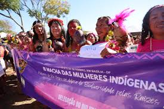
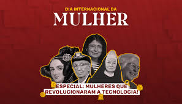

Notícia 1: Impacto Social das Mulheres na Política
As mulheres latino-americanas têm desempenhado papéis essenciais na política local e internacional, conquistando espaços antes reservados a homens. As mudanças sociais impulsionadas por essas líderes têm alterado o curso da história e da política em diversas nações da América Latina. Saiba Mais
Notícia 2: Desafios no Mercado de Trabalho para Mulheres
A desigualdade de gênero no mercado de trabalho ainda é um grande desafio na América Latina. Mulheres enfrentam discriminação salarial e barreiras no crescimento profissional, apesar de grandes avanços nos últimos anos. Saiba Mais
Notícia 3: A Luta das Mulheres Indígenas
As mulheres indígenas da América Latina continuam lutando por seus direitos, enfrentando desafios relacionados à preservação de suas culturas, territórios e direitos humanos. Sua resistência é crucial para a sobrevivência de suas comunidades e suas identidades culturais. Saiba Mais
Notícia 4: Educação e Empoderamento Feminino
A educação tem sido um dos pilares do empoderamento feminino na América Latina. Iniciativas voltadas para o acesso igualitário à educação têm mudado as perspectivas de vida para muitas mulheres, proporcionando-lhes novas oportunidades no mercado de trabalho e na sociedade. Saiba Mais
Notícia 5: Mulheres na Ciência e Tecnologia
Mulheres latino-americanas estão conquistando cada vez mais espaço nas áreas de ciência e tecnologia. Inovações criadas por essas mulheres estão impactando o mundo, quebrando barreiras e inspirando futuras gerações de cientistas e engenheiras. Saiba Mais
.jpeg)
Notícia 6: A Influência das Mulheres nas Artes
As mulheres latino-americanas têm se destacado nas artes, utilizando suas plataformas para expressar questões culturais, sociais e pessoais. A arte se tornou uma ferramenta poderosa para as mulheres desafiando estereótipos e promovendo mudanças significativas na sociedade. Saiba Mais